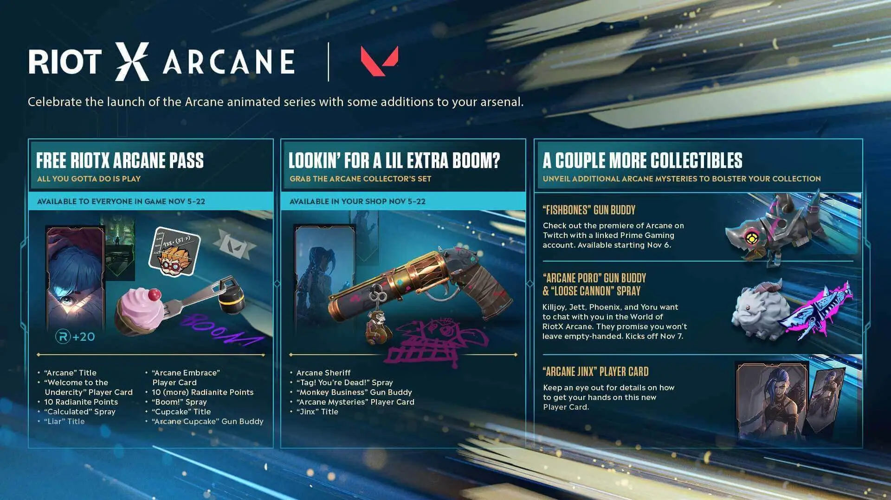
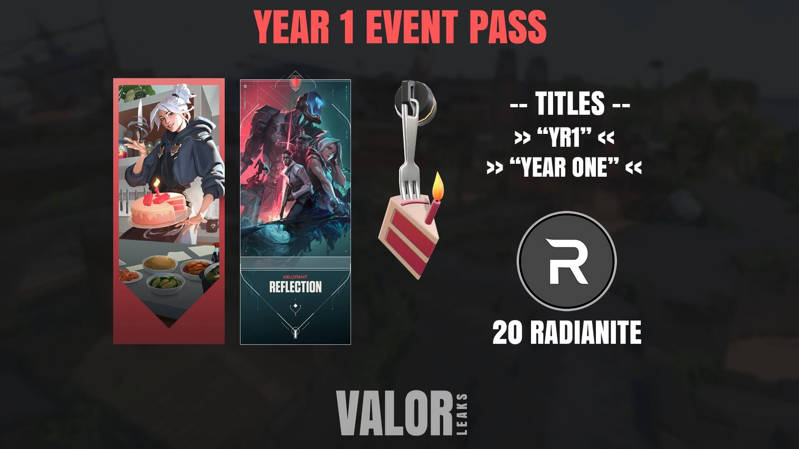
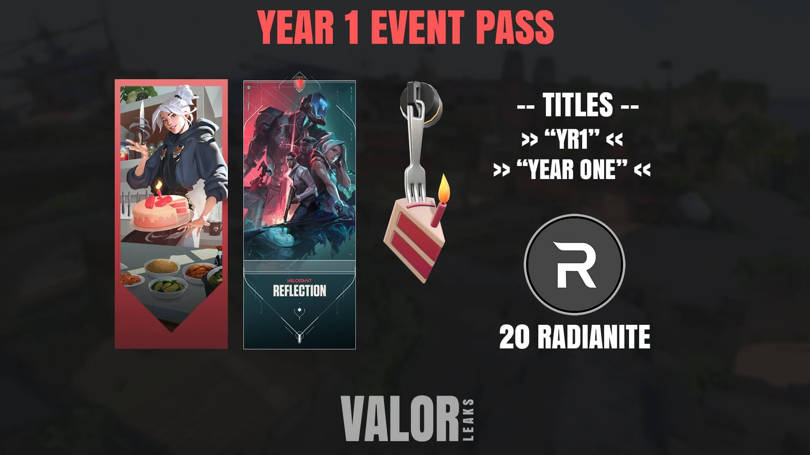
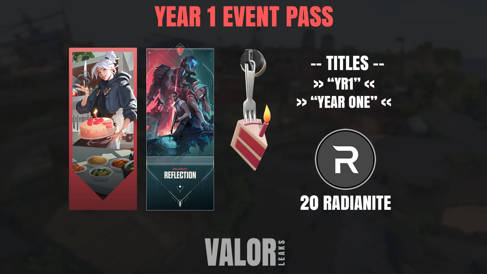

As of now, the only Riot sanctioned event is Valorant Champions, where we see some of the best teams in the world come together in Berlin to take home their share of the $1 million prize pool. (ROCCAT 2021)
Riot Games has announced that there will be a 'new tournament circuit' taking place in October of 2022 and that the VALORANT Challengers circuit will also be revamped for next year. Moreover, there will be a VALORANT Game Changers LAN tournament in November and December of 2022. (ESPORTSINSIDER 2021)
  

 1st picture by@VALORANT 2nd picture by@dexerto 3rd picture by@valorleaks